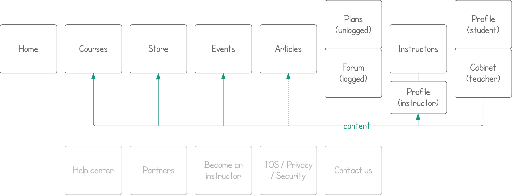

Interaction design
Photodemy is about learning and teaching photography online.
Remote work and education is one of my biggest obsessions, so here I'm sharing not just the job I done, but my thoghts and what I'd like to do. This project was made by 5 people: two developers, me and two people working on marketing, networking and some content. So answer on most of "why" and "where are" is "we wish we have resources for that". But we did it.
Format: Bootstrap-based responsive website
Disclaimer: All the story is about the time before the project was completely sold in 2017.
Photodemy offers the following content on photography topic:
Instructors and company representatives publish the above content. Students get access to free materials and demo lessons after registration and to all the content via subscription. Nothing fancy about the structure:
Courses are just educational videos.
Where are assignments? As I said - we wish we have resourses for that. As a fan of online education I know that assignments motivate many people to practice even if there's no professional expertise or grades. But as a person, who used to learn photography and music I should be fair: there's nothing that valuable as proper mentoring when you study art. It's not programming or math, you need a real person opinion on your work. There are no baked solutions how to make online education in arts effective. I'm looking forward to face this challenge (as well as other challenges, lol), and I have educational scientists to join me, have some?
Challenge: Navigate through three types of videos: courses (series of videos), past webinars (recordings of webinars we hosted), conference recordings (of workshops or lectures some conference hosts).
Result: There's nothing fancy about course parameters, so we can provide filters for almost all of them. I'd wish to see each filter as a checkbox, then a row with each option should be imcluded. Yet filters implemented as radio buttons, you may see the layout below. Navigation between courses is also available through a single course description (second image below). Instructor name or category there are clickable and lead to courses listing filtered by that paramenter.
Why don't we filter by language? There are just English and Russian that far. Preferred languages are in account settings. Defaults are English only and both. You get both by default only if you're located in CIS or have registered via form in Russian.
Consistency and standards: Of course, we were planning to change all listings (Articles, Events, Store) to that tab view. For events tabs should list their type: webinar, trip, workshop, etc. Articles was inclined to form a very few main "genres" like interview or tutorial. We were going to wait a while to finish the list. Same was expected for store - digital educational matherials we got don't have many different types.
Atomic access: Under the hood all users are the same. Types of users (student, teacher, etc) are easy to edit pack of rights. For example, implementation of "partner" account type for company partners was discussed. It's supposed to be able to generate the same content as teacher's account, except courses. So it's teacher account with one restriction. I find such extra type excess, as far as real user is a trusted company representative and will not take not concerted actions. While it's possible that they may want to publish a course under their brand. But it's a good example of what "atomic" means.
Challenge: Create public instuctor profile and consider marketplace where you can hire a photographer for your event.
Solution: Atomic access leads us to a standard profile view for all users, not just instructors. And why not? Student's profiles are private, but they're not supposed to stay private. People are likely to share their achievements. And this is free promotion for us. Finally, we hope that courses won't stay one way communication. We wish instructors to interact with their students, what leads to uploads for student account. And, of course, we achieve consistency with the standard profile layout. Profile layout includes a "visit card" on the top and tabs below. Each tab belongs to type of content or activity. Imho default tab for instructor should be "courses", for student - "achievements". But that far it looks like this:
Follow updates: is the button I'd like to see in the top of the instructor's profile. Many people indeed come for particular instructors, watch everything their guru has and start to ask in comments and on forum for more. With such button we can make them sure "we'll notify you as soon as this instructor publish new course, article or event".
Instructors, partners, money: From student side Photodemy is an educational platform. From other side it's a platform where you can monetize your educational content and promote your brand. Instructors are those who actually teach, partners are everyone else making money on Photodemy. How? There are 3 direct options:
Challenge: Figure out statistics for instructor.
Result: Main statistics blocks in prototype stage:
To be continued...